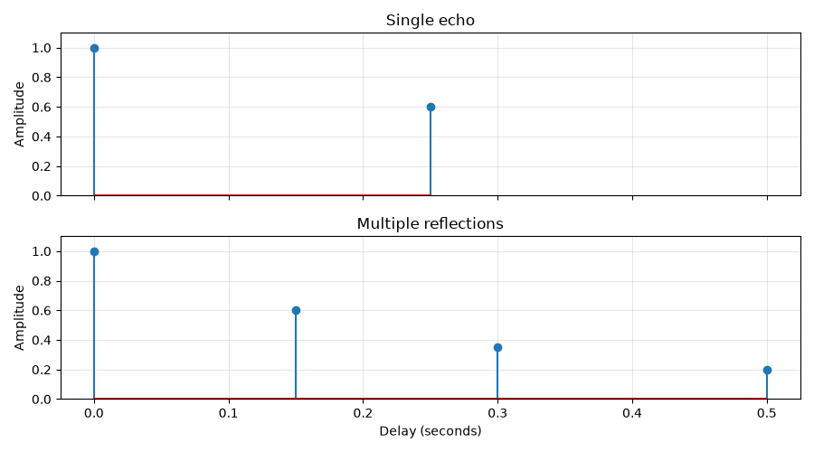
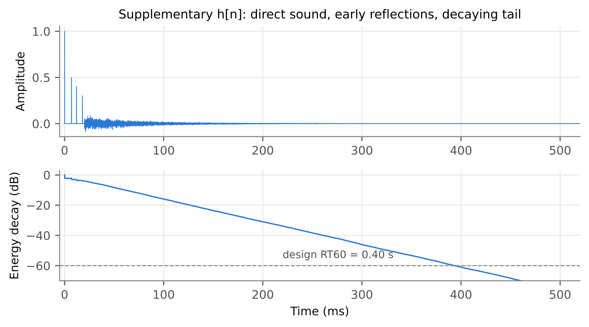
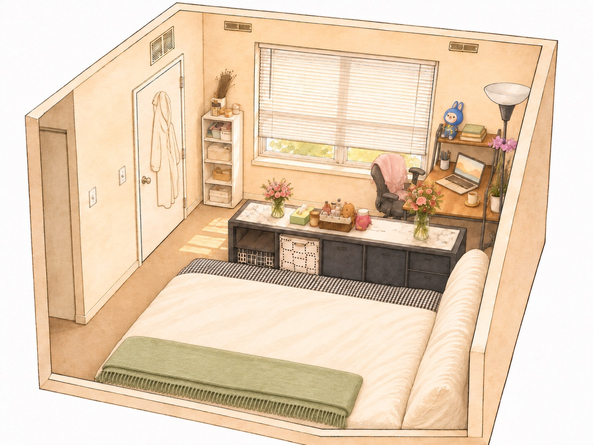
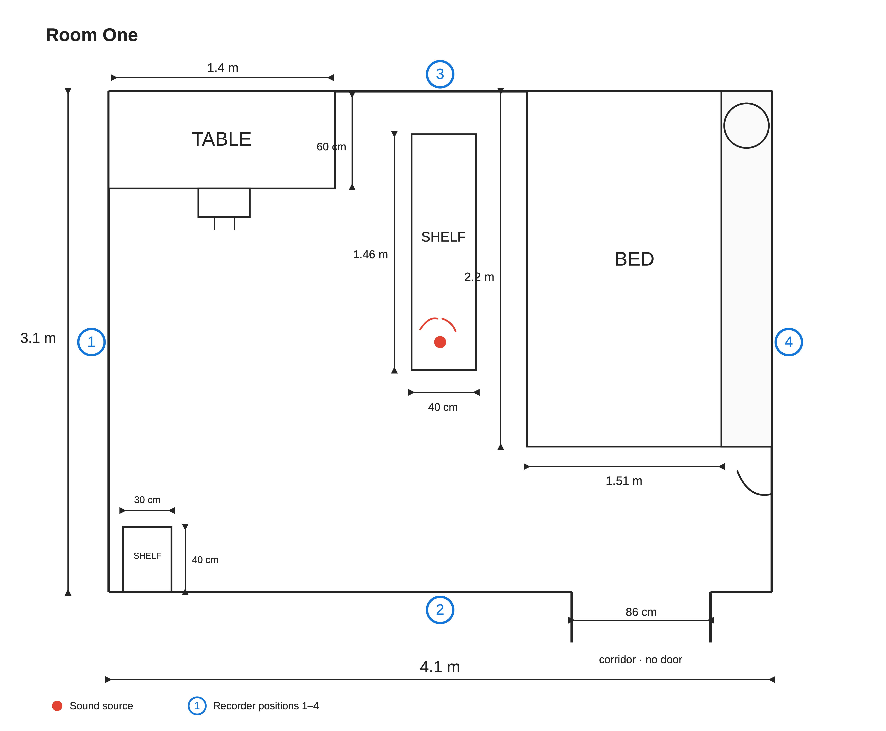
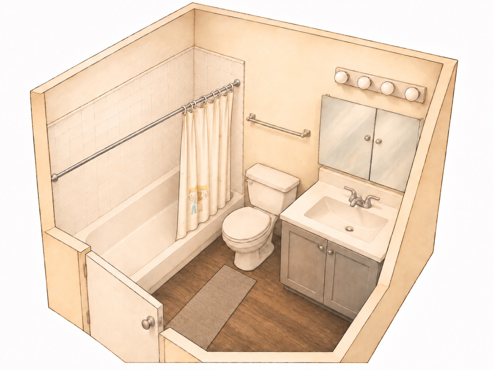
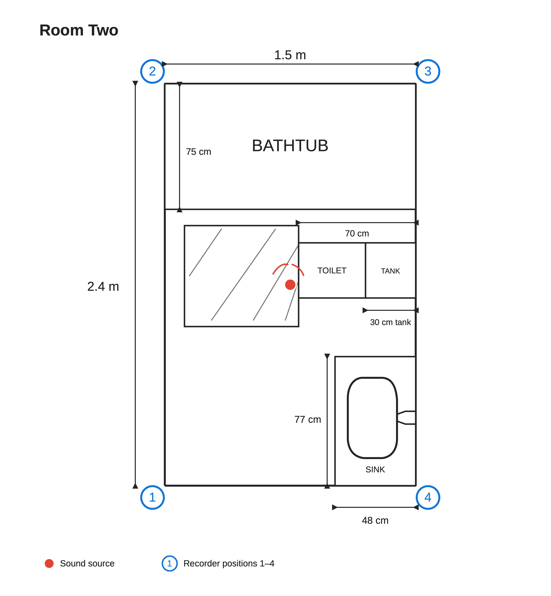
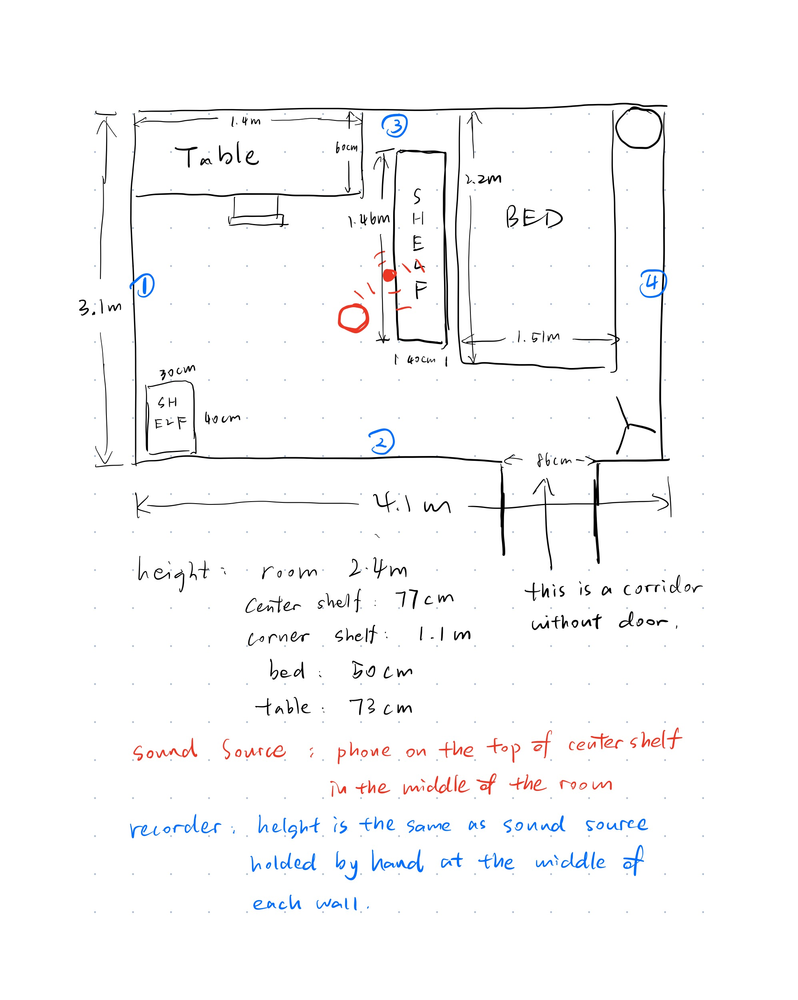
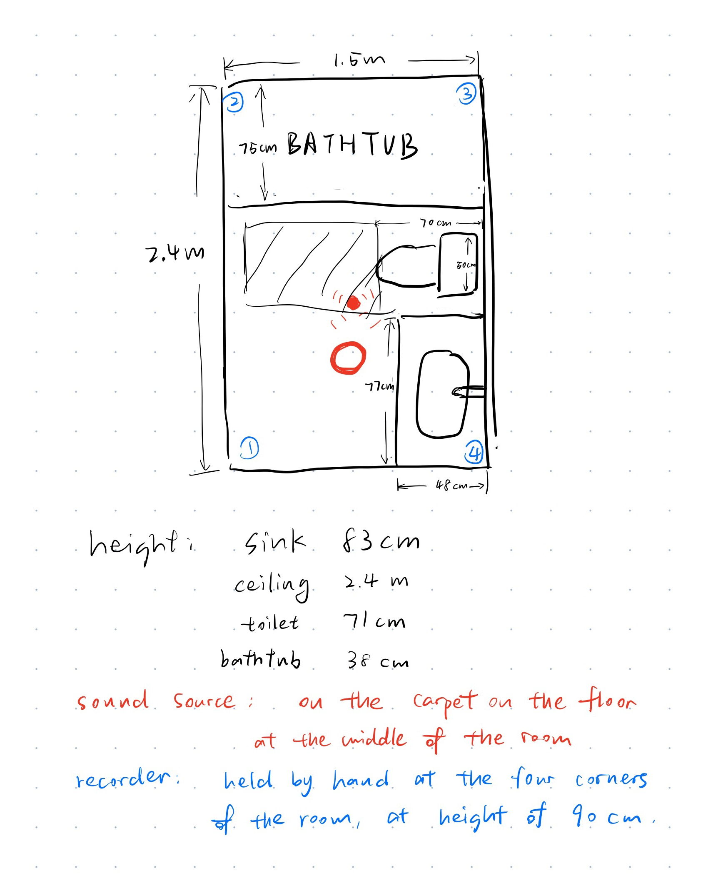

Part 1 · Data
Our data
We work with one kind of input and three kinds of derived or recorded audio: an original clap recording, simulated outputs computed from it, and real recordings of it played back in two rooms.
Data types at a glance
| Data | How we got it | Format | Count |
|---|---|---|---|
Original clap claps.wav | Recorded with hands close to a phone microphone. This is \(x[n]\). | WAV, mono after averaging | 1 |
| Simulated outputs | \(x[n]\) convolved with three impulse responses we designed in Python | WAV, 16-bit | 3 |
| Bedroom recordings | Phone plays claps.wav; recorder at the midpoint of each wall | AAC (.m4a), stereo, 48 kHz | 4 |
| Bathroom recordings | Phone plays claps.wav; recorder in each corner | AAC (.m4a), stereo, 48 kHz | 4 |
| Room measurements | Tape-measured dimensions and hand sketches of both rooms | Sketch, table | 2 rooms |
From these we compute further data: estimated room impulse responses \(\hat h[n]\), energy-decay curves, spectra, and room-acoustic metrics (EDT, \(T_{10}\), DRR, \(C_{50}\)).
The input: a clap recording
claps.wav contains a series of 12 hand claps about 0.45 s apart. A clap is a short, broadband burst, so it is a rough stand-in for an impulse. It is not a perfect one: it lasts a few milliseconds, has its own spectrum, and the claps vary in loudness (from 0.18 to 1.00 of the loudest). Because the hands were close to the microphone, the direct sound dominates, but there is still a short tail from the room it was recorded in.
Simulated room outputs
Each synthetic impulse response is an impulse at time zero (the direct sound) plus smaller, delayed impulses (reflections). We compute \(y = x * h\) with scipy.signal.fftconvolve.
| Model | Delays (s) | Amplitudes |
|---|---|---|
| Single echo | 0, 0.25 | 1.00, 0.60 |
| Multiple reflections | 0, 0.15, 0.30, 0.50 | 1.00, 0.60, 0.35, 0.20 |
| Early reflections + decay tail | 0, 0.007, 0.012, 0.018, then noise tail from 0.020 | 1.00, 0.50, 0.40, 0.30; tail \(T_{60}=0.40\) s, DRR 0 dB |


The two real rooms
Both rooms are in the same residence. Dimensions come from tape-measured hand sketches. In each room the phone (red dot) played claps.wav from the middle of the room, and the recorder was held at four positions, labeled ①–④ on every sketch and plan.
| Factor | Room One: bedroom | Room Two: bathroom |
|---|---|---|
| Size (L × W × H) | 4.10 × 3.10 × 2.40 m | 1.50 × 2.40 × 2.40 m |
| Volume | ≈ 30.5 m³ | ≈ 8.6 m³ |
| Contents | Bed, desk, shelves (mix of soft and hard) | Bathtub, toilet, sink cabinet (hard) |
| Openings | 0.86 m doorway to corridor, no door | Closed |
| Source | Phone on top of the center shelf (0.77 m) | Phone on the floor mat, room center |
| Recorder positions ①–④ | Midpoint of each of the four walls, same height as the source | The four corners, 0.90 m above the floor |
Room One · Bedroom


Positions ①–④ are at the middle of each wall (not the corners), held at the same height as the phone.
- 1Left wall, middle
- 2Bottom wall, middle
- 3Top wall, middle
- 4Right wall, middle
Room Two · Bathroom


Positions ①–④ are the four corners of the room, recorder held by hand 0.90 m above the floor.
- 1Bottom-left corner
- 2Top-left corner
- 3Top-right corner
- 4Bottom-right corner
The room dimensions already predict two things. Wall-to-wall round trips \(2d/c\) are 9–24 ms, so reflections should fuse with the direct sound rather than be heard as separate echoes. The lowest room modes \(c/2d\) lie at 42–114 Hz, where a phone speaker produces almost no sound, so we cannot observe them.
How we recorded
- One phone played
claps.wav; a second device, held by hand, recorded. One take per position, four positions per room. - Recordings are stereo AAC at 48 kHz; we average the channels to mono.
- Playback and recording were not synchronized, so we align signals afterwards using the strongest peak.
- Distances from furniture to walls were not measured, so the plans show layout only and are not used to compute reflection paths.
Listen
The input and the three simulated outputs are below. The eight room recordings are next to their positions in the bedroom and the bathroom sections above.
Reference: original hand sketches
The measured plans above were redrawn from these hand sketches, which we made while measuring the rooms. They are included for reference only: they hold the original dimensions and notes but are not needed to follow the analysis.

